2024–25 · Motorsport Aerodynamics module, EUSS · Team of three
CFD analysis of an LMP1-style prototype
We set up and ran a full-car CFD study of an LMP1-style prototype at 250 km/h in Altair HyperMesh and AcuSolve, with a moving ground and rotating wheels, and broke the result down device by device. The rear wing carried the car's downforce at a lift-to-drag ratio of 7.58, while the front wing made 190 N of lift instead of downforce and the diffuser was too steep to keep its flow attached.
- Altair HyperMesh CFD
- Altair AcuSolve
- SolidWorks
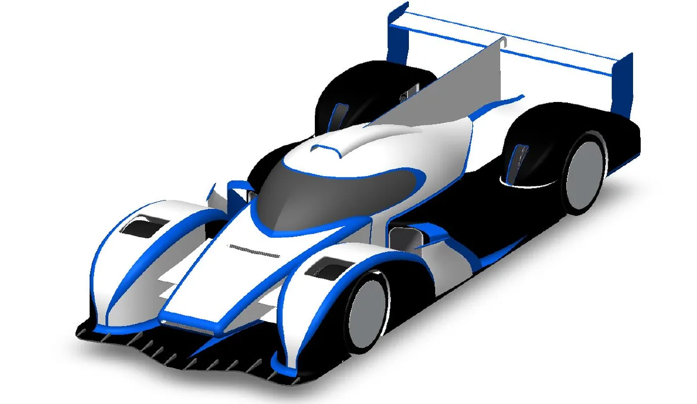
- 798 N Rear-wing downforce at 250 km/h, for 105 N of drag (L/D 7.58)
- +190 N Front-wing lift, caused by separation on the upper element
- 22.3 × 106 Reynolds number on the 4.65 m car length, Mach 0.202
- y+ 39 Mean surface y+ for a target of 30, inside the log-law region
01Scope and model
The brief was to pick a competition car, prepare and validate its geometry, set up a CFD case we could justify parameter by parameter, and evaluate its aerodynamic devices. We chose an LMP1-style model from GrabCAD. It is fan art rather than a real car, so it may not follow any specific year's technical regulations, but it has a ground-effect floor, a diffuser with strakes, two-element front and rear wings and internal ducts, and few small details to complicate validation.
Geometry preparation
- Cut the tyres 15 mm at the contact patch so they meet the ground with a realistic footprint.
- Replaced the detailed rims, the main source of validation errors, with flat discs, and rounded the rear wheel fairing.
- Repaired the remaining surface and solid errors with HyperMesh's automatic tools.
- Kept the three internal ducts (over the nose, on the roof and on the side) open on purpose, because they have a large effect on the forces we wanted to evaluate.
- Split the surfaces into groups (front wing, rear wing, diffuser wing, wheels, shark fin, chassis, internal channels) so forces could be integrated per device.
02Set-up and mesh
We ran at 250 km/h (69.44 m/s), a representative race speed for the category. At Mach 0.202 the flow can be treated as incompressible, and the Reynolds number on the car length is well into the turbulent range:
| Item | Setting |
|---|---|
| Software | Altair HyperMesh CFD (pre-processing), AcuSolve (solver) |
| Boundary conditions | Inlet 250 km/h, moving ground, rotating wheels |
| Solver | Steady, incompressible, k-ω SST |
| Domain | 13.25 m upstream (2.85 L), 53.5 m downstream (11.5 L), 15.6 × 15.6 m section. Proportions scaled from our earlier Ahmed-body practical |
| Refinement | Geometry box 1.5 × 1.5 × 5.5 m, wake box 5 × 5 × 40 m. Finer surface mesh on the thin support structure |
| Prism layers | Target y+ 30, 14 layers, growth ratio 1.28 |
| Mesh size | 1,922,137 nodes |
We chose k-ω SST because it handles adverse pressure gradients and separation well, accepting that it is weaker in stagnation regions. For a blunt body like this we targeted the log-law region (y+ > 30) with wall functions rather than resolving the viscous sublayer. The first-cell height came from a y+ calculator, and the prism stack was sized to contain the turbulent boundary layer:
Fourteen layers was the smallest count that kept the growth ratio inside the recommended 1.05–1.3 range, giving G = 1.28.
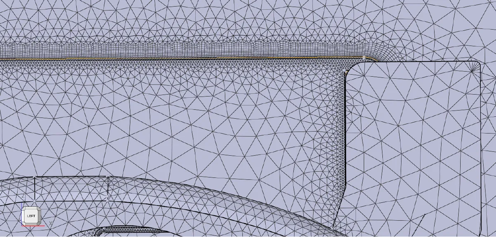
03Convergence checks
We judged convergence on residuals, force monitors and flow patterns. The solution ratios settled, with pressure oscillating around a stable mean, residuals stayed below 10−3, and the monitors held constant over the final steps.
The flow-pattern check raised one question. On the symmetry plane there was no clear stagnation point at the nose, which we would expect on any blunt body. The cause was the internal channel inlet on the centreline: air flows into the duct instead of stagnating. Elsewhere the flow behaved as expected, accelerating over convex surfaces such as the nose and windscreen, with local separation and reattachment at sharp changes in geometry.
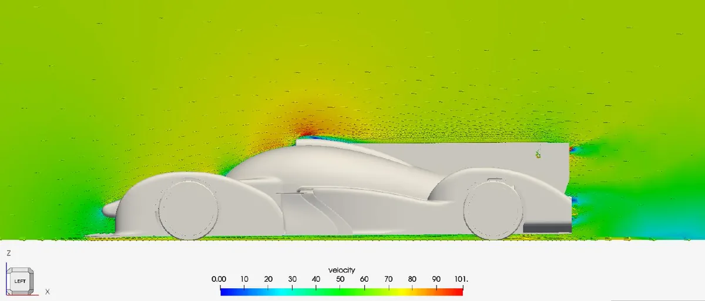
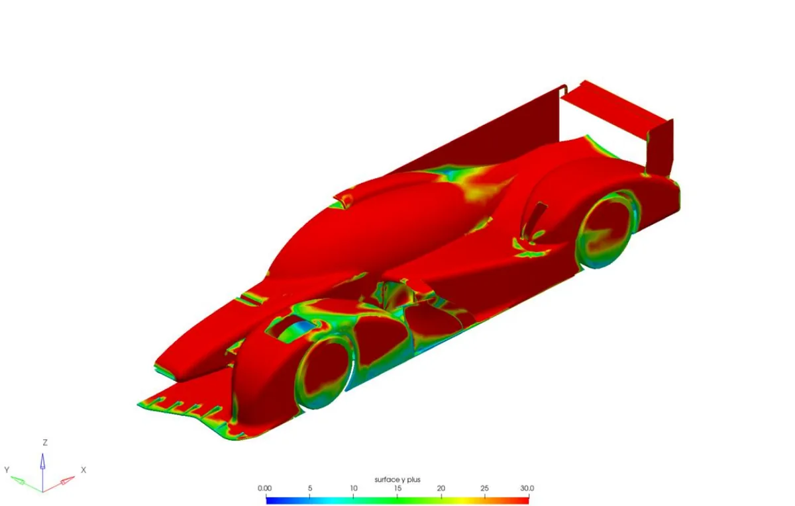
04Results by device
| Device | Drag [N] | Vertical force [N] | Finding |
|---|---|---|---|
| Rear wing | 105.32 | 798.34 down | Main downforce source, L/D 7.58. Lower element separated, upper element attached |
| Front wing | 18.30 | 190.24 up | Separation under the upper element removes the pressure difference |
| Diffuser wing | 3.35 | 2.80 down | More drag than downforce, and it starves the diffuser of flow |
| Front wheel | 1.51 | 27.49 up | Wake exits the upper vent and runs along the car |
| Rear wheel | 1.39 | 16.98 up | Fairing and vents give slightly lower drag than at the front |
Internal channels and roof intake
The roof intake and the outlet of the nose channel both caused separation where the bodywork changes slope suddenly, with the flow reattaching shortly afterwards. The pressure plot on the symmetry plane showed higher pressure inside the nose channel than outside it, so the channel produced lift, the opposite of its purpose.
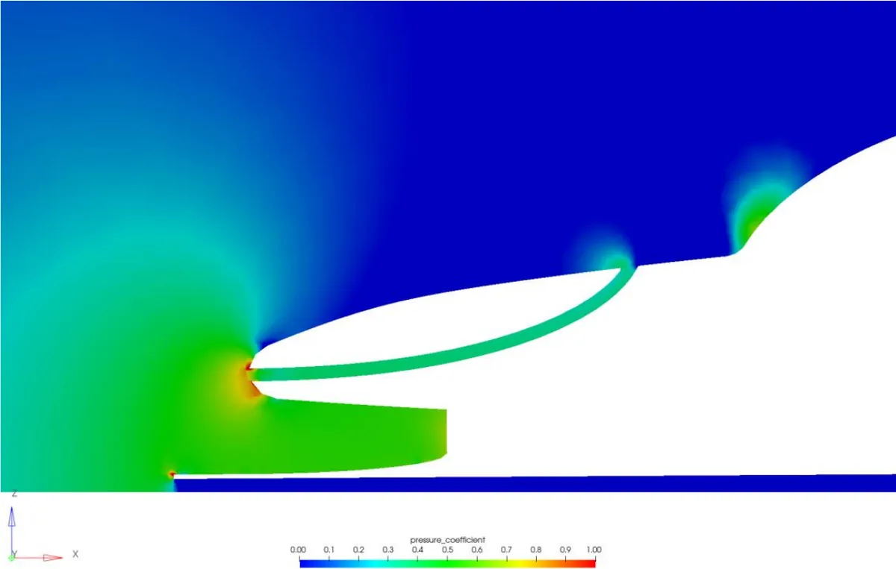
Front wing
The front wing has two elements stacked one above the other. Total pressure showed a separated region on the lower surface of the upper element, and with it gone there was almost no pressure difference across the profiles. The integrated force confirmed it: 190 N of lift for 18 N of drag. We proposed arranging the two elements as a cascade with more suitable profiles so they contribute downforce.
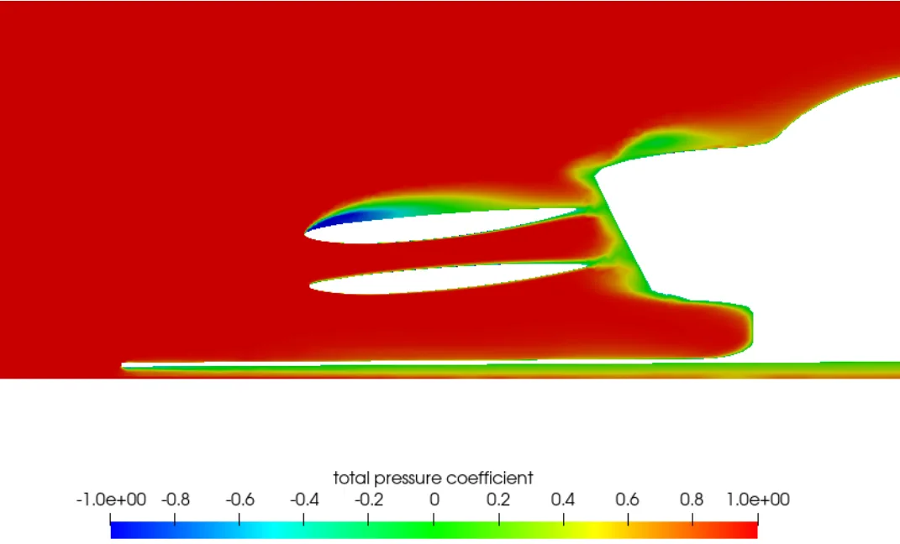
Rear wing
The rear wing worked as intended. Low pressure on the suction side gave 798 N of downforce for 105 N of drag. The streamlines were mostly uniform, with a tip vortex at the endplate. We traced it with velocity-vector slices 0.5 m ahead of the trailing edge, at it and 0.5 m behind it. Ahead of the wing the flow is uniform. At the trailing edge the vectors gain strong lateral and vertical components. Half a metre downstream the flow has largely settled. Total pressure showed the lower element running separated while the upper element stays attached along its chord.
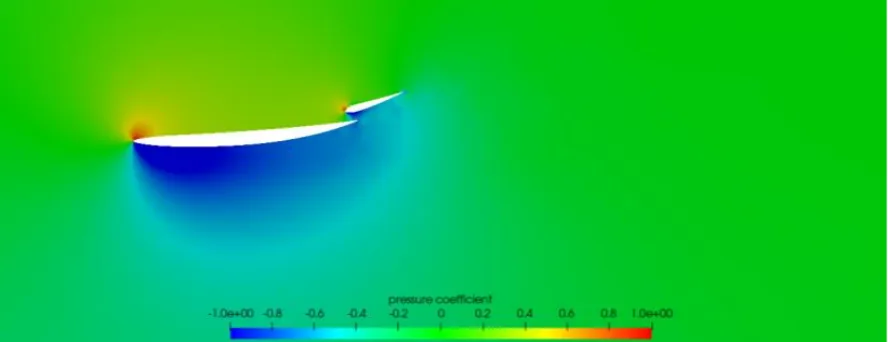
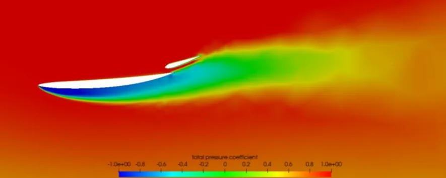
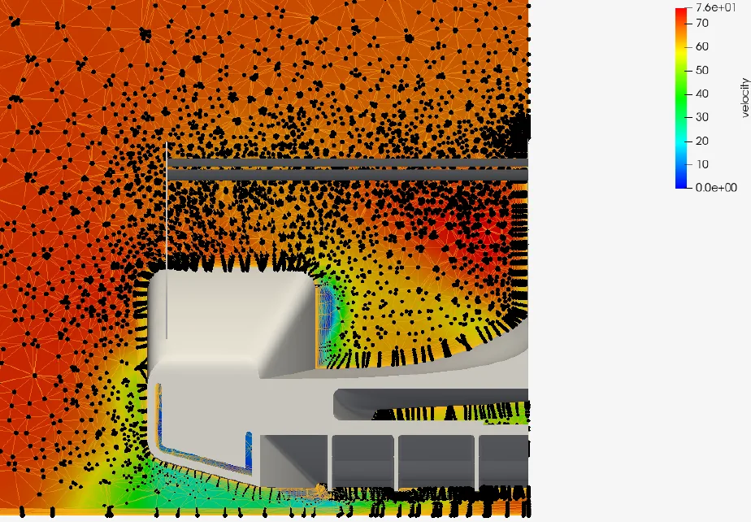
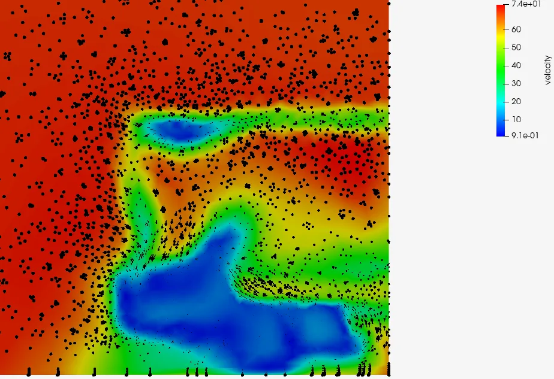
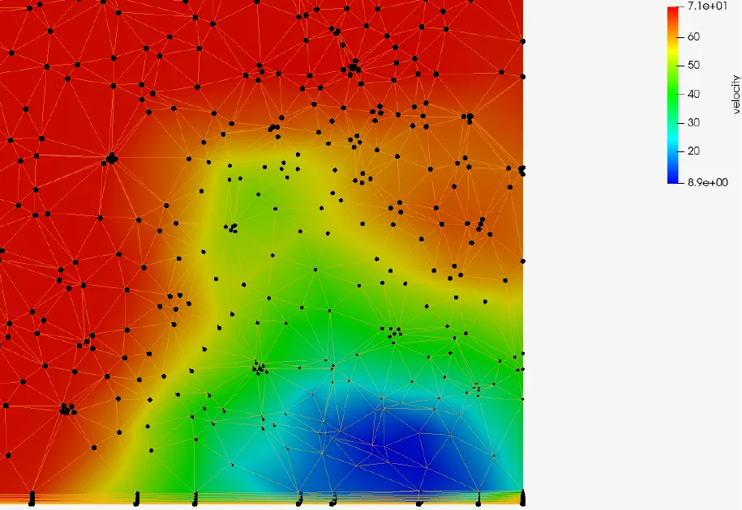
Figure 8. Velocity [m/s] and vectors on cross-sections through the rear-wing tip vortex.
Diffuser, floor and strakes
The flat floor ran at negative pressure along its length, as expected. At the diffuser the boundary layer separated almost immediately: the diffuser angle is too steep. The small wing under the diffuser made things worse, taking flow away from the diffuser while producing more drag than downforce. Behind the car, where the flow from both the diffuser and the upper body has separated, pressure rises and adds drag.
Plotting pressure along the floor took a workaround. The intersection-curve tool failed on the two-element wings and its seeds leaked into the centreline ducts, so we isolated the chassis and offset the plane slightly from the symmetry plane.
Under the floor, the flow drifted towards the centreline instead of staying aligned with the strakes. Velocity iso-surfaces showed why: the rear tyre's turbulent wake is drawn into the diffuser, cutting its efficiency.
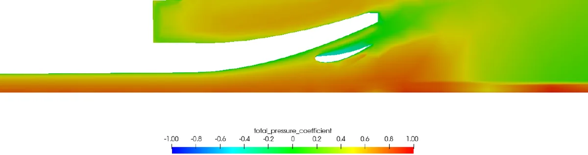
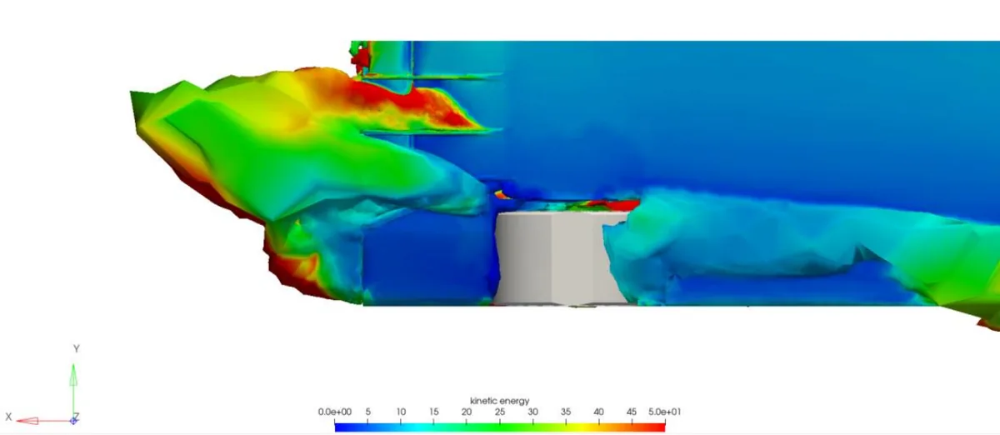
Aero balance
We located the centre of pressure with HyperMesh's integration tools, but the centre of gravity could only come from the bodywork-only CAD model, with no engine, driver or fuel. The balance comparison is therefore not meaningful. What the forces do show is a rear-biased load: almost all the downforce comes from the rear wing while the front wing lifts.
05Limitations and next steps
- Coarse mesh, no sensitivity study. Available computing power limited us to a relatively coarse mesh. A mesh-sensitivity study is the first thing to add, to find the element size beyond which the forces stop changing.
- Wall functions. A y+ around 30–39 suits a blunt-body study like this. If more detail were needed, for example on the separating wing elements, the next step would be to resolve the viscous sublayer with y+ near 1 on those surfaces.
- Surface groups. Separate groups for the diffuser, the flat floor and the upper chassis would have isolated their contributions. The single chassis group mixes downforce from the floor with lift and drag from the body.
- The model itself. The front-wing lift is the clearest sign that this model was designed for looks, not performance. The natural extension is to modify the geometry: a cascaded front wing, a shallower diffuser and reworked strakes, then rerun the comparison.
06Team and tools
A team project of three students for the Motorsport Aerodynamics module at EUSS, covering geometry preparation, set-up, meshing, convergence and post-processing.
Tools: Altair HyperMesh CFD, Altair AcuSolve, SolidWorks (model preparation and centre of gravity).
Source: Práctica 3: LMP1, Aerodinámica de Competición, EUSS. All figures are reproduced from the report.